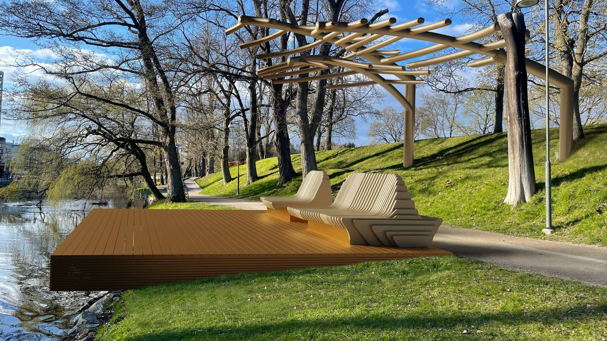
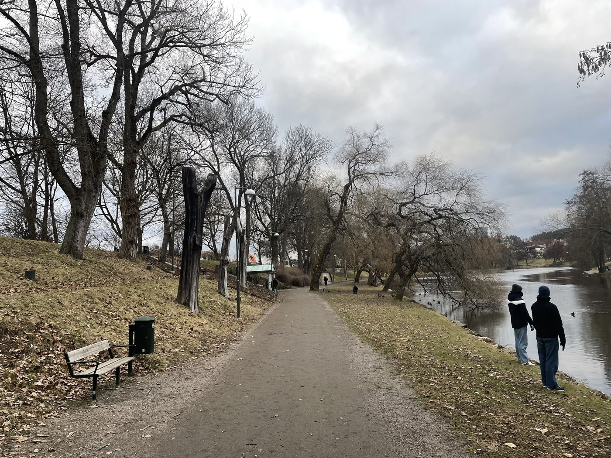
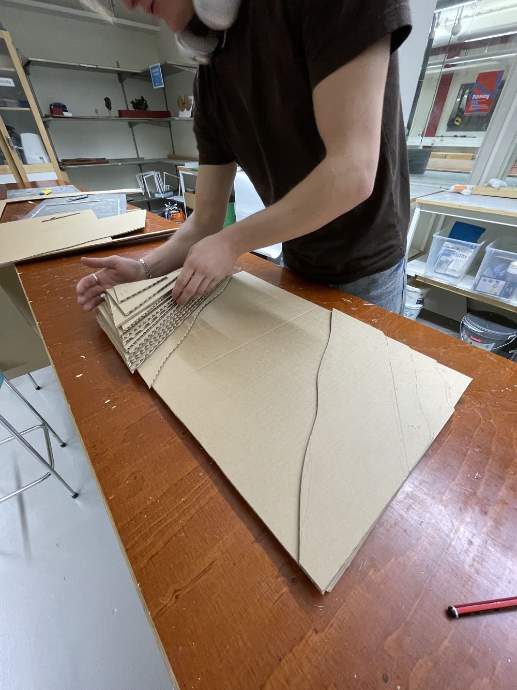

Course project · Year 1 · 2024
Åbacka
Outdoor furniture for one specific place: the riverbank along Stångån in Linköping. Form, function and material taken from the site itself.
Introduction
Reading the riverbank.
The brief was to create custom outdoor furniture for a place along Stångån, letting the site drive form, function and materials. The work started on site, studying how people move along the path, where they stop and how the slope meets the water.


From generation to generation.
Concept
Shaped by the body, built to last.
Åbacka has a rational origin in production technology and, above all, in the shape of the human body. Slats in quartz composite on robust steel blades mean no part repeats another, creating a unique and durable place to sit, lie and gather by the water.

Model
Built slice by slice.
The form was developed through physical models, building the loungers from stacked, individually cut sections, the same logic as the full-scale slats.



Result
A place where people meet.
Åbacka was created to bring people together. The seating faces both the water and the path, so different groups can meet on the same piece of furniture.
The tree-like pergola connects the path with the meeting place, while giving shade and a sheltered feeling.

Next project
Celina →